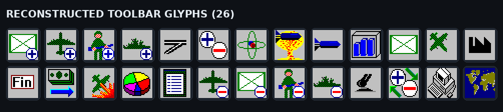
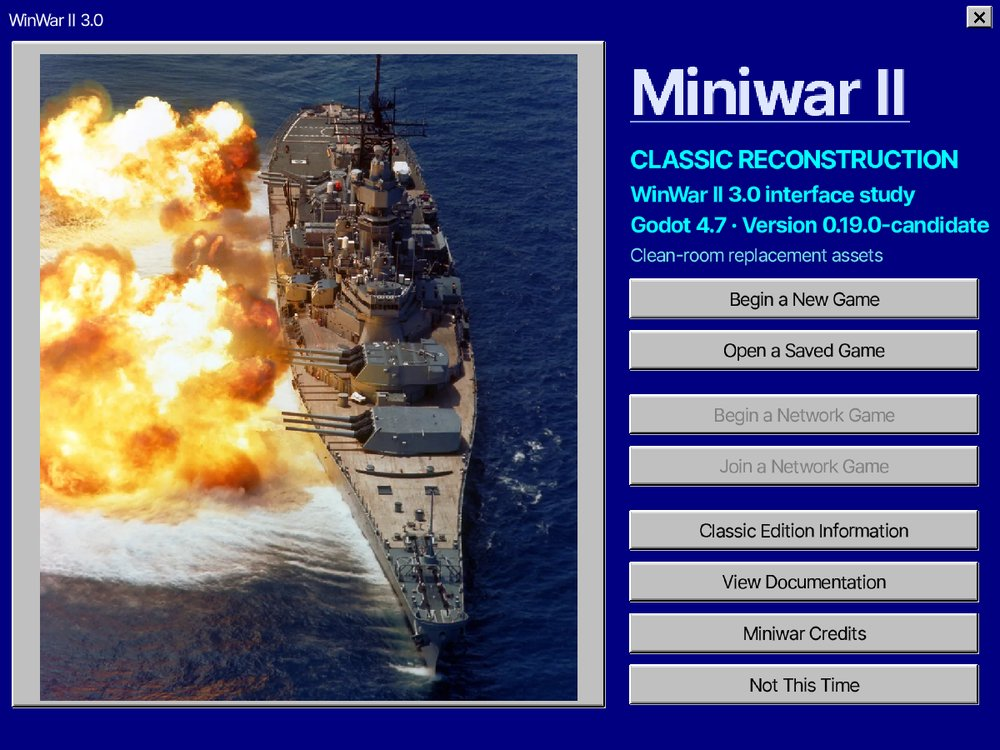
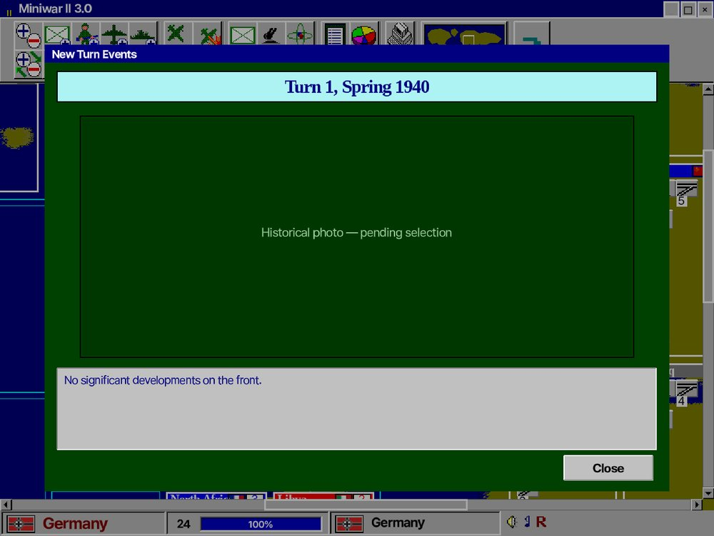

Miniwar의 1차 목표는 재해석이 아니라 충실한 복원입니다. 원작의 실행 파일과 도움말, 플레이 영상에서 규칙·수치·화면 동작을 회수하고, 그 근거 위에서 코드와 아트를 처음부터 새로 만듭니다.
WinWar II 3.0(1995) 복각형 턴제 보드 전략. 7개국이 승점 도달을 두고 육·해·공 전쟁을 벌입니다.
Godot 4.7 (GL Compatibility). 네이티브 픽셀 렌더로 원작 21~30px 아이콘을 흐림 없이 표시합니다.
원작 타이틀명·OST·비트맵 미사용. 시스템은 신규 구현, 원작은 동작·시각 참고로만 사용합니다.
원작 winwar2.exe의 Delphi 리소스와 ASCII 문자열, 도움말(winwar2.hlp), 실제 구동 영상을 정보 소스로만 사용합니다. 지도 지형 실루엣은 원본 이미지가 아니라 Natural Earth 1:110m 공개도메인 지형에서 독립 생성하고, 아이콘·국기·사운드는 클린룸 생성기로 새로 만듭니다.
이 프로젝트는 두 모드로 개발하며, 절대 섞지 않습니다. "원작에 있었나/없었나"가 유일한 분류 기준입니다.
| 모드 | 범위 | 상태 |
|---|---|---|
| 모드 1 원작복각 | 원작 UI·색·아이콘·폰트·창 동작, 영어 텍스트, 맵 위 1라운드 즉시전투 + 병종별 손실 팝업, Active/Reserve 편성, 원작 이벤트·규칙·생산창·보고서. 화려한 전투 연출은 원작에 없으므로 넣지 않음. | 진행 중 |
| 모드 2 어드밴스드 | 원작에 없던 개선: EU4식 전장 씬(틱 전투·사기·퇴각·연출), 장군 시스템, 확장 이벤트(~100), 지역 세분화, 지도자 대사. 모드 1 완성 후 착수. | 대기 |
이 바이블은 모드 1(원작복각)을 기준으로 서술합니다. 어드밴스드 확장 항목은 별도로 표시합니다.
원작 winwar2.exe의 리소스를 파싱해 지역 114개(육지 61 + 해역 53)의 이름·인접·가치·건물·초기 배치, 대륙 비트맵, 아이콘 그리드, 사운드 9종, 이벤트 26종 원문을 추출했습니다. 도움말과 국가별 공략 블로그, 도스판 스크린샷을 교차 검증해 유닛 수치와 턴 순서, 120/40 승리 규칙을 확정했습니다.

_tools/)가 새로 그린 아이콘입니다 — 활성/예비(육·해·공), 공장·비행장·대공, 폭격·원폭·카미카제·함포, 리포트·세계지도 등.
